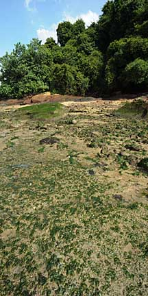
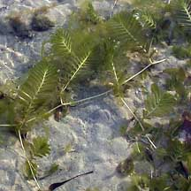
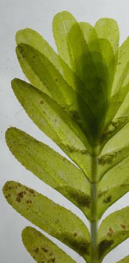
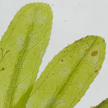
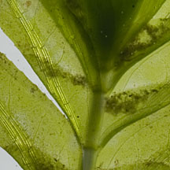
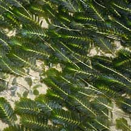
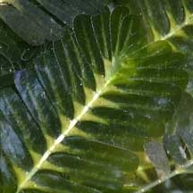
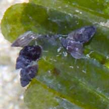
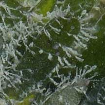

|
|
|
seagrasses
text index | photo
index
|
| Seagrasses > Family Hydrocharitaceae |
| Fern
seagrass Halophila spinulosa Family Hydrocharitaceae updated Mar 14
Where seen? The seagrass is sometimes seen in small patches on some of our Northern shores. But on Chek Jawa and some parts of Changi, it forms extensive meadows. The preliminary results of a transact survey of Chek Jawa suggest it is quite widely distributed in the seagrass lagoon there. Fern seagrass is found only in South China Sea region including the coasts of northern Australia. It grows in deeper waters of 10m and deeper, although in Singapore, this seagrass can be found right up to the edge of the rocky shore at Chek Jawa. It can tolerate a range of conditions so it is found in a wide range of habitats. Features: This beautiful seagrass has tiny leaves that grow in opposite pairs on a long thin stem, forming a flat fern-like overall shape. 10-20 pairs of leaves may form on the stem, new leaves growing from the tip while older leaves at the bottom drop off. Each leaf is about 2cm long and 0.4cm wide, with tiny serrations on the edges and a small one-sided fold at the base. (Some books refer to these leaves as leaflets). The entire stem is about 4-6cm long. Its rhizomes (underground stems) are thin, sometimes woody. Sometimes confused with feathery seaweeds. Seaweeds are not true plants and have a different internal structure from all seagrasses. Flowers and fruits: Fern seagrass has separate male and female plants. The flowers form at the junction where each tiny leaf attaches to the central stem. There may be several flowers on a single stem. The tiny fruits are flask-shaped and may contain up to 30 tiny seeds. Role in the habitat: Dugongs are known to graze on this seagrass. Status and threats: It is listed as 'Critically Endangered' on the Red List of threatened plants of Singapore. |
 Fern seagrass sometimes grows right up to the rocky shore on Chek Jawa! Chek Jawa, Apr 08  Leaves emerge from underground stems. Chek Jawa, Feb 02 |
|
 Chek Jawa, Sep 11 |
 Chek Jawa, Sep 11  |
 Changi, Jul 07  Small one-sided fold at the base of each leaf. Chek Jawa, Sep 03 |
|
 Tiny snails grazing on algae on the leaves. Chek Jawa, Aug 05 |
 Tiny organisms growing on leaflet. Changi, Nov 07 |
| Fern seagrass on Singapore shores |
| Photos of Fern seagrass for free download from wildsingapore flickr |
| Distribution in Singapore on this wildsingapore flickr map |
Links
|
|
|
|
You CAN make a difference for Singapore's seagrasses!  |